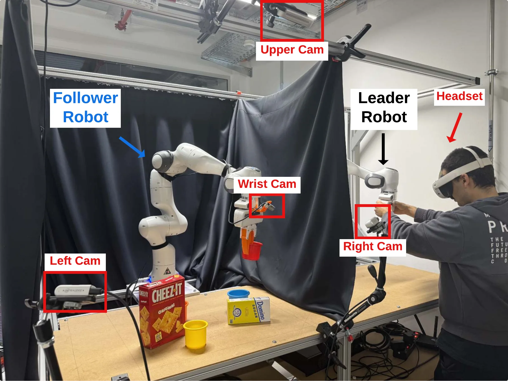

RGBs
Multi-view RGBFour camera streams on virtual screens. High-resolution images from several viewpoints.
Open recordingAccepted · IEEE Robotics and Automation Letters
Evaluating Visualization Modalities
for XR Robot Teleoperation
A study of how we show the robot’s world—and how that changes the way people manipulate it.
01 / THE IDEA
Teleoperating a robot means acting through someone else’s eyes. Camera streams show fine textures. Point clouds reveal spatial relationships. What happens when we bring them together?
We combine a fused, semantically filtered 3D point cloud with a high-resolution wrist-camera view, then compare it with three other visualization configurations under the same leader–follower control loop.
Robot teleoperation is critical for applications such as remote maintenance, fleet robotics, search and rescue, and data collection for robot learning. Recent general-purpose XR frameworks have made immersive, point-cloud-based teleoperation broadly accessible, yet a central design question remains open: what should the operator actually see? We address this question with a VR telepresence system tailored to contact-rich manipulation: geometry from three RGB-D cameras is fused into a workspace-aligned point cloud, semantic filtering concentrates the point budget of a standalone headset on task-relevant geometry, and a wrist-mounted RGB stream supplies high-resolution local detail where point-cloud fidelity is limited.
In a controlled within-subject study with 31 participants, we compared multi-view RGB streams (RGBs), fused point cloud (PC), point cloud with wrist-mounted RGB (PC+RGB), and ego-centric stereo video (OpenTeleVision, OT) across cup insertion, T-shape assembly, and wire-loop placement. Failed trials were assigned the 120 s task limit in the primary completion-time analysis. PC+RGB yielded the lowest overall mean completion time (44.13 s) and the highest observed success rate (97.31%). Workload, usability, and preference results also favored the point-cloud-based configurations. These findings support combining global 3D scene structure with high-resolution local RGB detail in the tested leader–follower setup.
02 / SEE FOR YOURSELF
Choose a task. Compare what the operator sees.
Insert two cups into their targets among occluding box obstacles: depth and contact alignment.
Four camera streams on virtual screens. High-resolution images from several viewpoints.
Open recordingA workspace-aligned, filtered point cloud. Global 3D structure from three RGB-D cameras.
Open recordingThe same 3D point cloud, complemented by a wrist-camera image near the virtual end-effector.
Open recordingEgo-centric stereo video. An immersive camera view from the follower’s perspective.
Open recordingThese are individual demonstration recordings, not matched trials or study averages. “Play all” restarts the four clips together; their durations differ. Immersive views are projected into 2D, so visible distortion does not reflect the headset experience. Recordings retain their original compressed video and audio streams; playback starts muted.
03 / BEHIND THE VIEW
Built on IRIS. Extended for contact-rich manipulation.

Three calibrated RGB-D cameras contribute geometry to one workspace-aligned point cloud.
Semantic filtering removes redundant robot and background geometry, reserving the point budget for the task.
A wrist-mounted RGB view supplies fine visual information close to the virtual end-effector.
GPU-accelerated rendering on Meta Quest 3 combines the point cloud, robot meshes, and wrist view.
04 / WHAT WE FOUND
31 participants. A controlled within-subject study.
Four modalities, three manipulation tasks.
44.13s
Lowest overall mean
failure-penalized completion time.
Highest observed
overall success rate.
Main-study means across all three tasks. Failed trials were assigned the 120 s task limit before participant-level aggregation. Bars begin at zero; uncertainty is not shown.
In this leader–follower setup, global 3D structure and local RGB detail complement each other. The findings concern the tested system, tasks, and control interface.
05 / TAKE A CLOSER LOOK
Code, recordings, and implementation notes
for the research community.
The earlier preprint uses the title “A Multi-View 3D Telepresence System for XR Robot Teleoperation.” The accepted paper uses the title above.
@article{dincer2026operator,
title = {What Should the Operator See?
Evaluating Visualization Modalities
for XR Robot Teleoperation},
author = {Dincer, Enes Ulas and
Zaremski, Manuel and Nick, Alexandra and
Wucher, Elias and Deml, Barbara and
Neumann, Gerhard},
journal = {IEEE Robotics and Automation Letters},
year = {2026},
note = {Accepted for publication}
}Publication details will be updated when the final record is available.